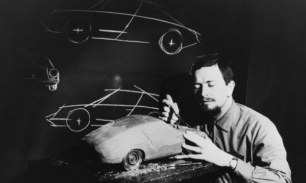

History of Porsche
Porsche was founded by Ferdinand Porsche in 1931. He was an Austrian German automotive-engineer. Unfortunately he had an untimely death in the 1950's due to a stroke.
The original and headquarters to this day is in Stuttgart, Baden-Württemberg - in Germany. The family would go to innovate the auto industry. The Porsche 911 was voted in 5th place for car of the century.
Porsche's major mile stones include:
- Designing the Beetle in 1938
- Launching the famous 911 in 1964
- Collaboration with Toyota to learn Japanese production methods in 1990
- Merged with Volkswagen A.G. in 2011
- Launched the world's fastest electric charging station in 2017
Throughout history, it should be noted that Porsche had pushed motorsports and performance
